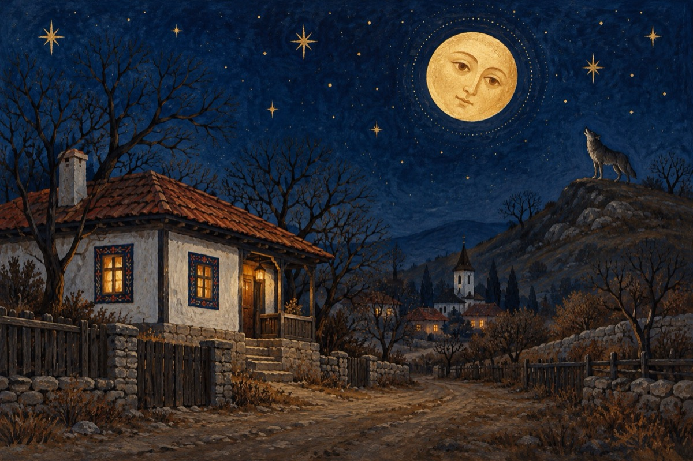

Unde-i iarna
Eu știu că iarna n-au mâncat-o lupii
Și totuși mă uit îngrijorat afară!
Oare unde se vor fi încurcat timpii,
De nu reușește ca s-apară?
Rău nu-i, că gerurile nu sunt venite
Cui să nu-i placă așa ceva
Când strada, casa nu sunt întroienite
De ea depinde anu-ntreg ce va rula!
Așa deci s-avem răbdare îi sfătuiesc pe unii
Că privind an de an, a noastre calendare,
Reiese că niciodată iarna nu au mâncat-o lupii
Până acum ce-a fost, a fost o întâmplare!...
Vasile Groza